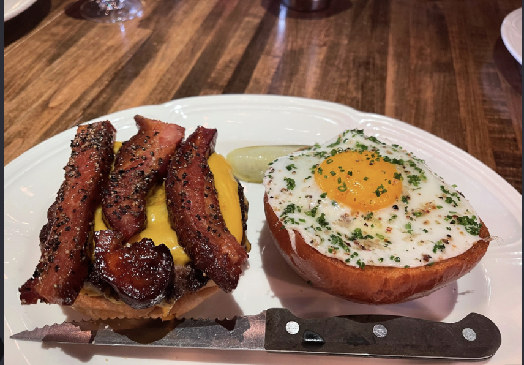

Au Cheval
This is the burger benchmark in my head: rich, messy, and worth making the meal the whole event.
My order philosophy: commit to the burger.Food notes / Chicago
Trying a new food spot is one of my favorite ways to make a normal day feel like an outing. I’m especially serious about burgers, but I’m not loyal enough to stop exploring.

My food map
I keep a running mental list of places I want to try, then turn it into a plan with a friend. The best spots usually give me a reason to leave my usual route.
This is the burger benchmark in my head: rich, messy, and worth making the meal the whole event.
My order philosophy: commit to the burger.I like finding places that feel tied to the block they’re on—small rooms, good food, and a reason to come back.
Best shared with a friend and no strict schedule.I’m still building my official favorites list. For me, the fun is trying something new before it becomes a routine.
Send me a recommendation and I’ll probably ask what to order.